Oral health is inseparable from overall health, influencing immunity, inflammation, nutrition, and healthy ageing.
The condition of the mouth often reflects and affects the condition of the body.By understanding these connections, care can move beyond treatment alone to support long-term health, prevention, and lasting well-being.
At Vats & Param - The Dentists
Our Clinic
More than dentistry, an environment designed to support comfort, prevention, and lifelong health.

Dentistry Beyond Teeth
Dentistry Beyond Teeth
We look beyond the tooth to understand the whole person. Your oral health is a window into your systemic health and we use it as one.
Time. Thought. Trust.
Time. Thought. Trust.
Great care begins with understanding.
- Time: Your concerns, goals, and health history matter.
- Thought: Comprehensive diagnostics support accurate decisions.
- Trust: Clear guidance helps you understand every step.
Built for Safety.
Designed for Care.
Built for Safety. Designed for Care.
Our clinic is designed to the highest standards of infection control and safety for every person because a clean environment is the foundation of good care.
- - Hygienic atmosphere
- - Strict infection control
- - Advanced sterilisation
Dentistry and Longevity
Dentistry and Longevity
Oral health is part of whole-body health.
- - Better nutrition
- - Reduced inflammation
- - Improved daily function
- - Healthier ageing
Supporting wellbeing at every stage of life.

Your mouth is the gateway to your overall health.
Brain
Your mouth shapes your mind
Oral infections release inflammatory cytokines that cross the blood-brain barrier, directly affecting cognition, mood, and neural clarity. Chronic periodontal disease has been linked to accelerated cognitive decline.
- Linked to Alzheimer's and dementia risk
- Affects concentration and mental clarity
- Oral bacteria found in brain tissue
Lungs
Every breath carries what your mouth holds
Oral bacteria can be aspirated into the lower respiratory tract, triggering infections and worsening conditions like COPD and pneumonia. Poor oral hygiene dramatically increases pulmonary infection risk.
- Aspiration pneumonia risk increases 3x
- Worsens asthma and COPD
- Bacterial colonies found in lung biopsies
Heart
Gum disease and your cardiovascular system
Periodontal bacteria enter the bloodstream, attaching to arterial plaques and triggering inflammatory responses that narrow vessels. Studies show gum disease patients face nearly twice the risk of heart disease.
- Doubles the risk of heart attack
- Elevates blood pressure and arterial stiffness
- Oral bacteria found in arterial plaque
Gut
Digestion begins in the mouth
The oral microbiome is the gateway to your gut. Imbalanced oral bacteria disrupt the digestive ecosystem, while compromised chewing reduces nutrient absorption and burdens the entire digestive system.
- Oral bacteria colonise the gut lining
- Poor chewing reduces nutrient absorption by up to 40%
- Linked to IBD and Crohn's disease
Joints
Your bite shapes your skeleton
Bite imbalance and jaw misalignment create compensatory postural patterns throughout the body. Periodontal inflammation also mimics and worsens rheumatoid arthritis the same immune pathways are activated.
- Jaw dysfunction causes neck and back pain
- Periodontal bacteria trigger joint inflammation
- RA patients have 8× higher rates of gum disease
Skeletal Muscle Health
Muscle function impacts metabolism, posture, airway patency, and overall resilience
Muscle function impacts metabolism, posture, airway patency, and overall resilience.
- Supports metabolism and energy production
- Maintains airway patency and breathing function
- Essential for postural stability and spinal health
Pregnancy
A critical window for mother and baby
Hormonal shifts during pregnancy amplify gum inflammation and periodontal disease risk. Untreated gum disease during pregnancy increases the risk of premature birth, low birth weight, and gestational complications. Regular dental care during pregnancy protects both mother and developing child.
- Pregnancy gingivitis affects up to 75% of expectant mothers
- Untreated gum disease increases premature birth risk by 7×
- Oral bacteria can cross the placental barrier affecting fetal development
Glycemic Control
Blood sugar dysregulation impairs immune response and accelerates periodontal destruction
Blood sugar dysregulation impairs immune response and accelerates periodontal destruction.
- Weakens immune defense against oral bacteria
- Accelerates gum disease progression
- Creates feedback loop between diabetes and dental health
Sleep
Jaw structure, tongue position, and airway size shape whether sleep is restful
Jaw structure, tongue position, and airway size — all mouth-adjacent factors — are central to whether sleep is restful or repeatedly interrupted. Undiagnosed airway restriction shows up first as snoring or fatigue, and correcting it at the source can resolve sleep issues that other approaches only manage.
- Airway anatomy (tongue position, jaw structure) as a driver of obstructive sleep apnea
- Bruxism/TMJ disrupting sleep continuity
- Correcting airway restriction resolves sleep issues
Posture
How the jaw sits at rest shapes how the head balances on the spine
How the jaw sits at rest shapes how the head balances on the spine — a forward head posture from mouth breathing or a misaligned bite pulls on the neck and shoulders all day, and the same imbalances carry into how the body settles at night, disrupting sleep posture and breathing.
- Craniocervical posture linked to jaw position and airway patency
- Mouth breathing and malocclusion associated with forward head posture
- Jaw misalignment disrupts sleep positioning and breathing
Understand More About Our Approach
We believe dentistry goes beyond teeth. The Vats & Param Method is a systematic, evidence-based approach that combines deep diagnostic discovery with root-cause analysis to ensure comprehensive care.
Meet the Visionary Founders Behind Our Practice
Dr. Paramjot Kaur
Health care entrepreneur
20+ years specialist in periodontics with a systems-thinking approach. Expert in long-term oral health preservation and strategic practice management.
View Full Profile ->
Prof. Dr. Srivats Bharadwaj
Healthcare Visionary & Entrepreneur
30+ years of diagnostic-driven dentistry focused on root-cause analysis and whole-body wellness integration. Visionary pioneer in systems-based dental care.
View Full Profile ->